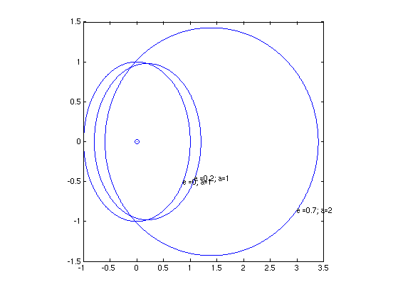

Orbit plotter
This is a script that plots several orbits on top of each other for comparison.
Specifically, it takes a set of data (a vector) that carries the ellipticities of orbits (e) and another set of data that includes the semi-major axes (a) of plots and then plots the orbits for the corresponding ellipticity and semi-major axis.
Contents
Set up some orbits to plot
Define vectors of a: semi-major axis e: ellipticity
a = [1, 1, 2]; e = [0, 0.2, 0.7];
Make the plot
clf % Clear figure of any other plots shown on it. plot(0,0,'-ob'); % Plots the common focal point of every orbit plotted, % equivalent to the sun in the solar system. phi = -pi/6; % Starting point for where labels are placed along the ellipse % Value is adjustable delphi = (sqrt(2)/36).*pi;% the step by which phi increases- % made it irrational to try and prevent overlap in case, phi makes a full % rotation if( length(a) == length(e))% Checks that the elipticity and semimajor % vectors are of equal length hold on; axis square; for i = 1:length(a) % In order to plot all orbits, need to use a loop plotOrbits(a(i), e(i), phi); % Calls the function plotOrbits to draw a curve of the elliptical % orbit from its semi-major axis and eccentricity. The value of phi % determines where along the orbit, the labels can be placed. phi = phi + delphi;% Increasing value of phi. end hold off else display('Dimensions do not agree');%in the case when vectors are unequal end